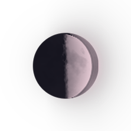

🌓 FIRST QUARTER (DUSTY ROSE) · Desire, Courage & Decision · AFTER DARK · SYNTH-POP
CORE — KISS ME WRONG
📜 Official Synchronized Lyrics (53 Lines)
▶ 00:01KISS ME WRONG, HOLD ME RIGHT!
▶ 00:05UNDER YELLOW CITY LIGHTS!
▶ 00:07LET THEM TALK, LET THEM TRY
▶ 00:11THEY DON'T GET TO NAME THIS NIGHT!
▶ 00:14KISS ME WRONG, HOLD ME RIGHT
▶ 00:18MAKE A LITTLE TROUBLE TONIGHT!
▶ 00:20IF THE WHOLE WORLD'S OUT OF LINE
▶ 00:24KISS ME WRONG AND HOLD ME RIGHT!
▶ 00:29WRONG TO THEM, RIGHT TO US!
▶ 00:32NO MORE HIDING WHAT IT WAS!
▶ 00:34WRONG TO THEM, RIGHT TO US
▶ 00:38KISS ME WRONG, HOLD ME RIGHT!
▶ 00:42LAST BUS GONE, THE PAVEMENT SHINES
▶ 00:46RAIN AT THE CURB, YOUR HAND NEAR MINE
▶ 00:48ACROSS THE STREET, THE SHUTTERS FALL
▶ 00:51THEY THINK THEY KNOW US AFTER ALL
▶ 00:55YOU MOVE SO CLOSE, THEN LOOK AWAY
▶ 00:57LIKE SOMEONE'S KEEPING SCORE TODAY
▶ 01:01DON'T GIVE ME PROMISES TO KEEP
▶ 01:04JUST TAKE ONE HONEST STEP WITH ME!
▶ 01:08YOU TURN AND PULL ME TO YOUR SIDE
▶ 01:11AND ALL THE CITY COMES ALIVE!
▶ 01:15KISS ME WRONG, HOLD ME RIGHT!
▶ 01:19UNDER YELLOW CITY LIGHTS!
▶ 01:23LET THEM TALK, LET THEM TRY
▶ 01:27THEY DON'T GET TO NAME THIS NIGHT!
▶ 01:29KISS ME WRONG, HOLD ME RIGHT
▶ 01:34MAKE A LITTLE TROUBLE TONIGHT!
▶ 01:36IF THE WHOLE WORLD'S OUT OF LINE
▶ 01:39KISS ME WRONG AND HOLD ME RIGHT!
▶ 01:44THERE'S HALF A MOON ABOVE THE FLATS
▶ 01:46A THOUSAND WINDOWS LOOKING BACK
▶ 01:47YOU PULL ME CLOSER BY THE SLEEVE
▶ 01:49FOR ONCE THERE'S NOWHERE ELSE TO BE
▶ 01:51THE CITY HUMS BENEATH OUR FEET
▶ 01:54YOUR HEARTBEAT FALLING INTO MINE!
▶ 01:56ONE DAY A KISS WILL JUST BE A KISS
▶ 02:00WE WON'T HAVE TO CALL IT BRAVE
▶ 02:03TILL THAT MORNING FINDS THIS STREET
▶ 02:06LOVE ME IN THE LIGHT WE MAKE!
▶ 02:11K I S S M E W R O N G
▶ 02:21W R O N G T O T H E M · R I G H T T O U S
▶ 02:38KISS ME WRONG, HOLD ME RIGHT!
▶ 02:40UNDER YELLOW CITY LIGHTS!
▶ 02:43LET THEM TALK, LET THEM TRY
▶ 02:48THEY DON'T GET TO NAME THIS NIGHT!
▶ 02:52KISS ME WRONG, HOLD ME RIGHT
▶ 02:54MAKE A LITTLE TROUBLE TONIGHT!
▶ 02:57IF THE WHOLE WORLD'S OUT OF LINE
▶ 03:01KISS ME WRONG AND HOLD ME RIGHT!
▶ 03:05WRONG TO THEM... RIGHT TO US...
▶ 03:10KISS ME WRONG... (HOLD ME RIGHT!)
▶ 03:17K I S S M E W R O N G